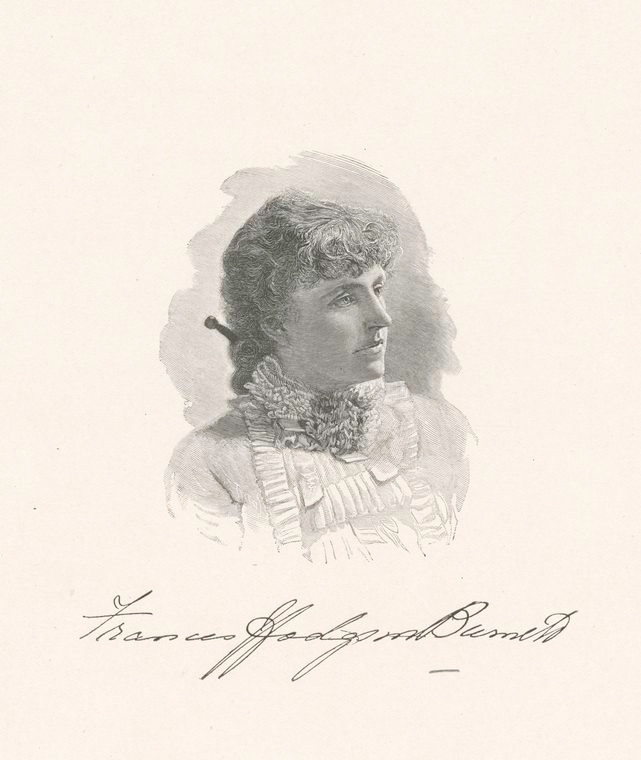
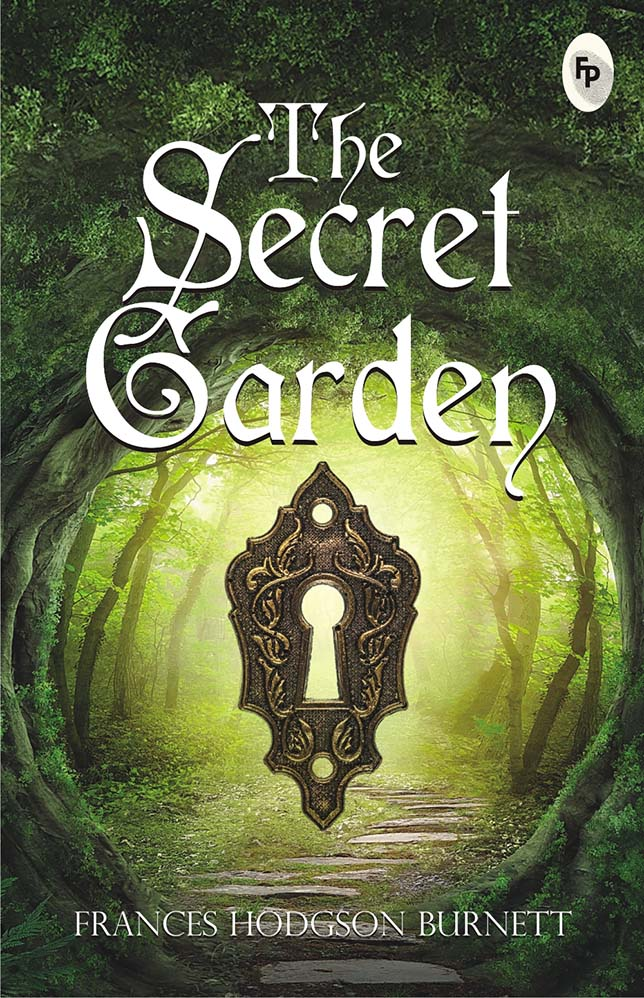
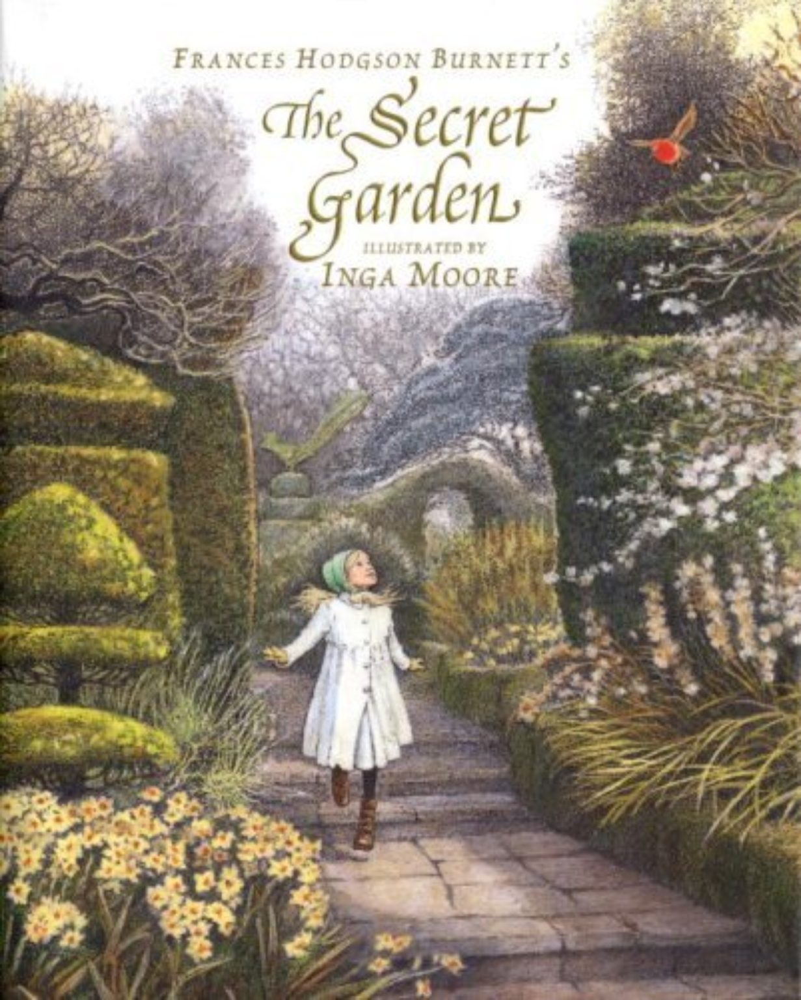
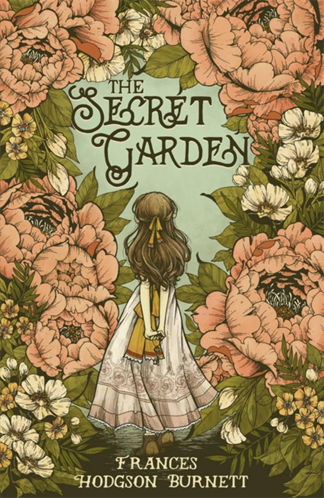

THE SECRET GARDEN




Thats my favourite novel.Mary Lennox is a sour, lonely, and spoiled ten-year-old girl living in British India. When a cholera outbreak kills her parents and the servants, she is sent to live with her uncle, Archibald Craven, at Misselthwaite Manor on the Yorkshire moors in England. The house is huge, gloomy, and full of secrets. Mary hears crying at night and learns that her uncle, who is grieving and rarely home, has locked the door to a garden that belonged to his late wife. Mary befriends Martha, a cheerful maid, and later Martha’s brother Dickon, a kind boy who seems to understand animals and plants. With help from a friendly robin, Mary finds the hidden key and the door to the walled garden. She and Dickon begin secretly bringing the neglected garden back to life. Mary also discovers the source of the crying: her cousin Colin, a spoiled, bedridden boy who is convinced he is dying. She brings him into the garden, where fresh air, sunshine, and friendship begin to heal him. He starts to walk and grow strong. In the end, Mr. Craven returns and finds Colin healthy and the garden in bloom. The story shows how nature, kindness, and a sense of purpose can heal both body and spirit.


LETS SEE THE MAIN CHARACTERS
LETS HAVE A LOOK TOWARDS SOME FAMOUS BOOKS BY HODGSON
| CHARACTER | ROLES |
|---|---|
| Mary Lennox | A spoiled, sickly, lonely girl who is orphaned in India and sent to live in Yorkshire, England. She changes a lot over the story as she discovers the garden. |
| Colin Craven | Mary's cousin, a boy who believes he is an invalid and stays hidden in his room. He regains his health and strength through the garden and friendship. |